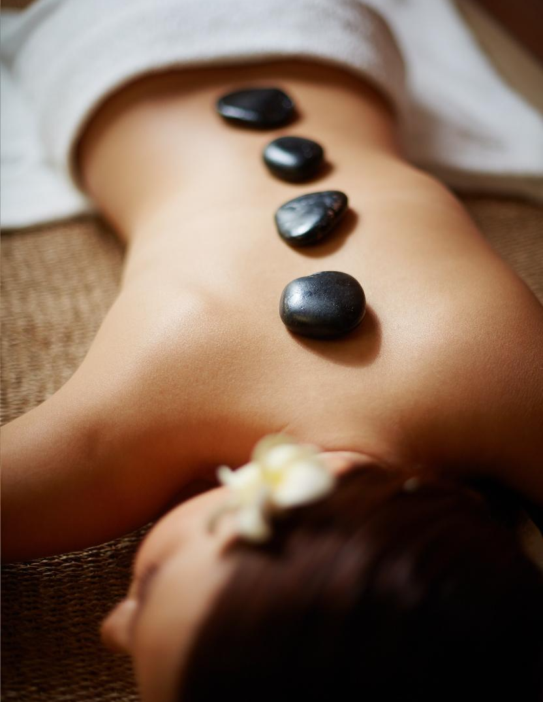
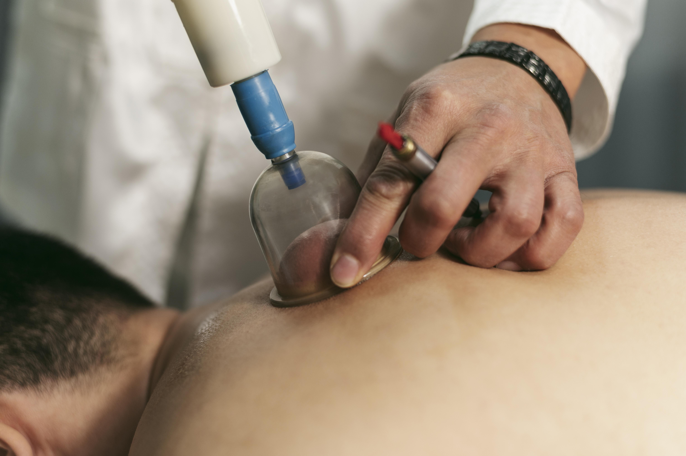

Nossos Serviços

Massagem Relaxante
Redução do estresse e bem-estar.

Massagem Sueca
Melhora da circulação e alívio de tensões.

Drenagem Linfática
Eliminação de toxinas e redução de inchaço.

Massagem Modeladora
Redução de medidas e definição corporal.

Massagem com Pedras Quentes
Relaxamento profundo e equilíbrio energético.

Reflexologia Podal
Alívio do estresse e equilíbrio corporal através dos pés.

Ventosaterapia
Melhora da circulação e alívio das tensões musculares.

Shiatsu
Técnica japonesa que equilibra a energia do corpo.